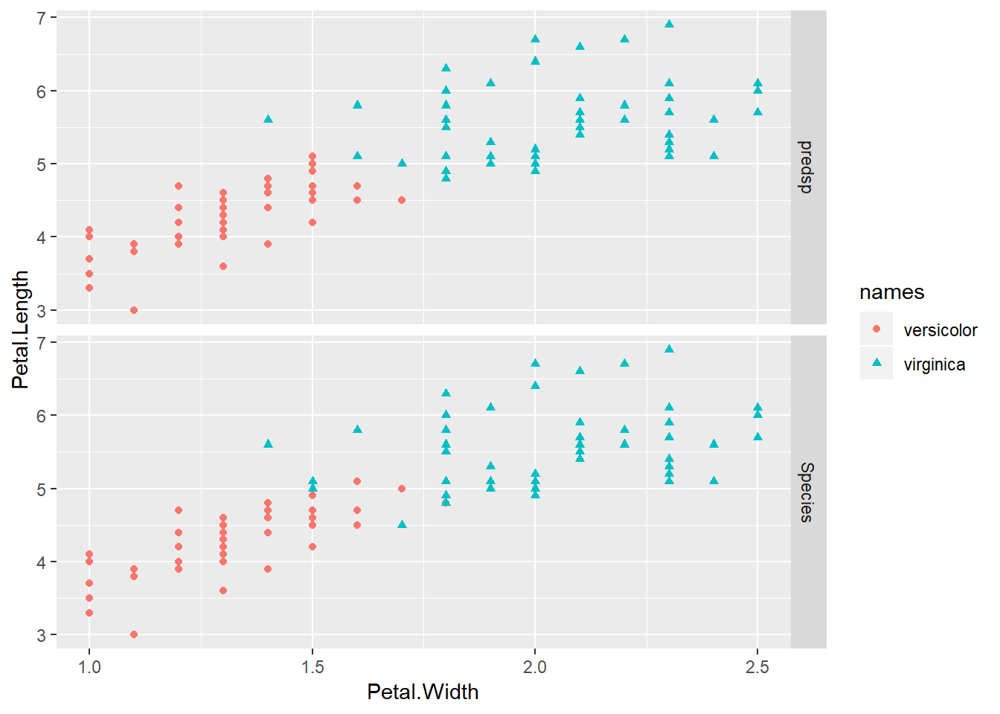
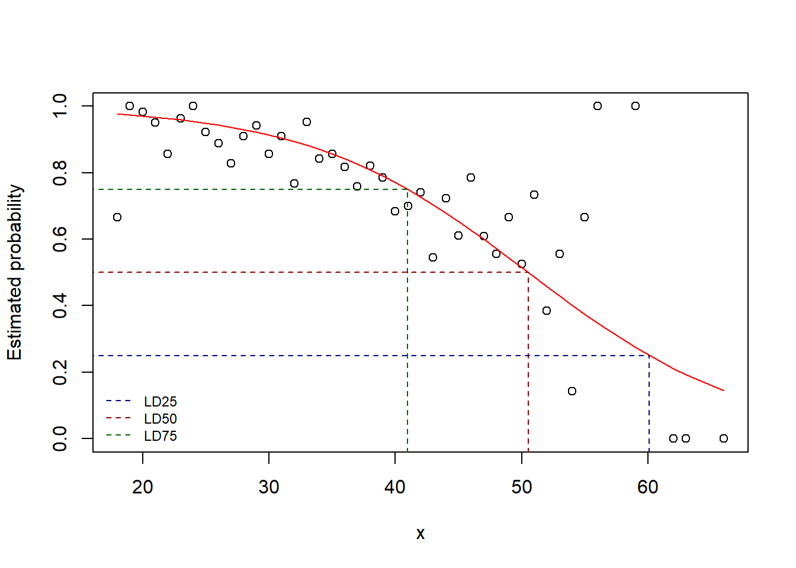
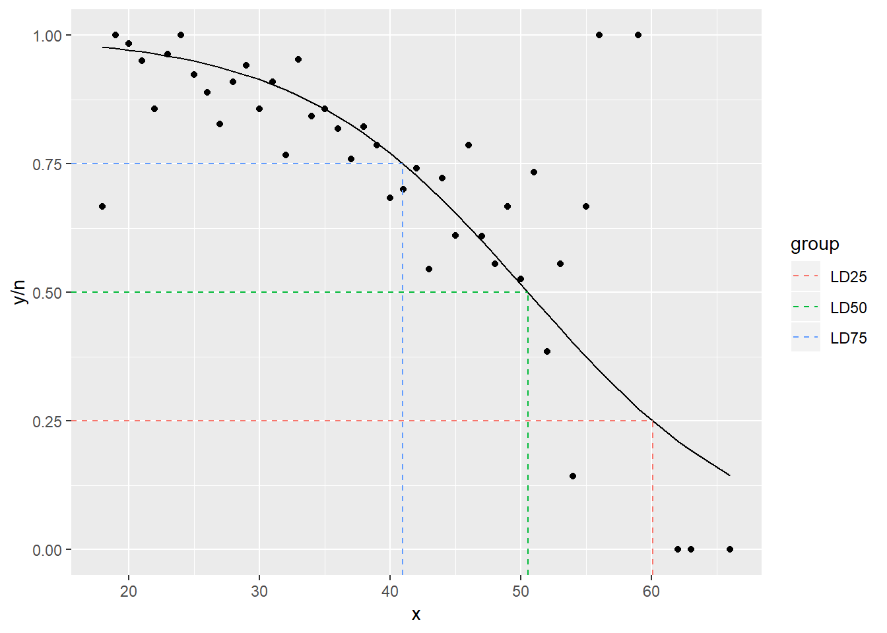

Exp:
head(iris)## Sepal.Length Sepal.Width Petal.Length Petal.Width Species
## 1 5.1 3.5 1.4 0.2 setosa
## 2 4.9 3.0 1.4 0.2 setosa
## 3 4.7 3.2 1.3 0.2 setosa
## 4 4.6 3.1 1.5 0.2 setosa
## 5 5.0 3.6 1.4 0.2 setosa
## 6 5.4 3.9 1.7 0.4 setosadim(iris)## [1] 150 5library(dplyr)##
## Attaching package: 'dplyr'## The following objects are masked from 'package:stats':
##
## filter, lag## The following objects are masked from 'package:base':
##
## intersect, setdiff, setequal, unionlibrary(ggplot2)
library(tidyr)
iris1 = iris %>%
filter(
Species %in% c("versicolor","virginica")
)
head(iris1)## Sepal.Length Sepal.Width Petal.Length Petal.Width Species
## 1 7.0 3.2 4.7 1.4 versicolor
## 2 6.4 3.2 4.5 1.5 versicolor
## 3 6.9 3.1 4.9 1.5 versicolor
## 4 5.5 2.3 4.0 1.3 versicolor
## 5 6.5 2.8 4.6 1.5 versicolor
## 6 5.7 2.8 4.5 1.3 versicolormodelfit=glm(Species ~ Petal.Width + Petal.Length, data=iris1, family = binomial(link="logit"))a=iris1%>%
mutate(pred=predict(object = modelfit, type = "response"), predsp=ifelse(pred>0.5, "virginica","versicolor"))b=a%>%
gather(key=sp, value=names, Species, predsp, na.rm=T)## Warning: attributes are not identical across measure variables;
## they will be droppedp=b%>%
ggplot(aes(Petal.Width, Petal.Length,
colour = names,
shape = names)) +
geom_point()+
facet_grid(sp~.)
p
When you save the notebook, an HTML file containing the code and output will be saved alongside it (click the Preview button or press Ctrl+Shift+K to preview the HTML file).
The preview shows you a rendered HTML copy of the contents of the editor. Consequently, unlike Knit, Preview does not run any R code chunks. Instead, the output of the chunk when it was last run in the editor is displayed.
Exp:
df <- structure(list(y = c(2L, 7L, 776L, 19L, 12L, 26L, 7L, 12L, 8L,
24L, 20L, 16L, 12L, 10L, 23L, 20L, 16L, 12L, 18L, 22L, 23L, 22L,
13L, 7L, 20L, 12L, 13L, 11L, 11L, 14L, 10L, 8L, 10L, 11L, 5L,
5L, 1L, 2L, 1L, 1L, 0L, 0L, 0L), n = c(3L, 7L, 789L, 20L, 14L,
27L, 7L, 13L, 9L, 29L, 22L, 17L, 14L, 11L, 30L, 21L, 19L, 14L,
22L, 29L, 28L, 28L, 19L, 10L, 27L, 22L, 18L, 18L, 14L, 23L, 18L,
12L, 19L, 15L, 13L, 9L, 7L, 3L, 1L, 1L, 1L, 1L, 1L), x = c(18L,
19L, 20L, 21L, 22L, 23L, 24L, 25L, 26L, 27L, 28L, 29L, 30L, 31L,
32L, 33L, 34L, 35L, 36L, 37L, 38L, 39L, 40L, 41L, 42L, 43L, 44L,
45L, 46L, 47L, 48L, 49L, 50L, 51L, 52L, 53L, 54L, 55L, 56L, 59L,
62L, 63L, 66L)), .Names = c("y", "n", "x"), class = "data.frame", row.names = c(NA,
-43L))
mod.fit <- glm(formula = y/n ~ x, data = df, weight=n, family = binomial(link = logit),
na.action = na.exclude, control = list(epsilon = 0.0001, maxit = 50, trace = T))## Deviance = 47.12782 Iterations - 1
## Deviance = 44.52325 Iterations - 2
## Deviance = 44.49945 Iterations - 3
## Deviance = 44.49945 Iterations - 4summary(mod.fit)##
## Call:
## glm(formula = y/n ~ x, family = binomial(link = logit), data = df,
## weights = n, na.action = na.exclude, control = list(epsilon = 1e-04,
## maxit = 50, trace = T))
##
## Deviance Residuals:
## Min 1Q Median 3Q Max
## -2.0373 -0.6449 -0.1424 0.5004 2.2758
##
## Coefficients:
## Estimate Std. Error z value Pr(>|z|)
## (Intercept) 5.812080 0.326245 17.82 <2e-16 ***
## x -0.115027 0.008338 -13.79 <2e-16 ***
## ---
## Signif. codes: 0 '***' 0.001 '**' 0.01 '*' 0.05 '.' 0.1 ' ' 1
##
## (Dispersion parameter for binomial family taken to be 1)
##
## Null deviance: 282.181 on 42 degrees of freedom
## Residual deviance: 44.499 on 41 degrees of freedom
## AIC: 148.46
##
## Number of Fisher Scoring iterations: 4Pi <- c(0.25, 0.5, 0.75)
LD <- (log(Pi /(1-Pi))-mod.fit$coefficients[1])/mod.fit$coefficients[2]
LD.summary <- data.frame(Pi , LD)
LD.summary## Pi LD
## 1 0.25 60.07905
## 2 0.50 50.52811
## 3 0.75 40.97717#### method1
lin.pred <- predict(mod.fit)
pi.hat <- exp(lin.pred)/(1 + exp(lin.pred))
e=plot(df$x, df$y/df$n, xlab = "x", ylab = "Estimated probability")
e=lines(df$x, pi.hat, lty = 1, col = "red")
e## NULLsegments(x0 = LD.summary$LD, y0 = -0.1, x1 = LD.summary$LD, y1 = LD.summary$Pi,
lty=2, col=c("darkblue","darkred","darkgreen"))
segments(x0 = 15, y0 = LD.summary$Pi, x1 = LD.summary$LD, y1 = LD.summary$Pi,
lty=2, col=c("darkblue","darkred","darkgreen"))
legend("bottomleft", legend=c("LD25", "LD50", "LD75"), lty=2, col=c("darkblue","darkred","darkgreen"), bty="n", cex=0.75)
## or
library(ggplot2)
library(tidyverse)## -- Attaching packages --------------------## v tibble 1.4.2 v purrr 0.2.5
## v readr 1.1.1 v stringr 1.3.1
## v tibble 1.4.2 v forcats 0.3.0## -- Conflicts ---- tidyverse_conflicts() --
## x dplyr::filter() masks stats::filter()
## x dplyr::lag() masks stats::lag()df$pred <- pi.hat
LD.summary$group <- c('LD25','LD50','LD75')
ggplot(df,aes(x = x, y = y/n)) +
geom_point() +
geom_line(aes(y = pred),colour = "black") +
geom_segment(data=LD.summary, aes(y = Pi,
xend = LD,
yend = Pi,
col = group),x = -Inf,linetype = "dashed") +
geom_segment(data=LD.summary,aes(x = LD,
xend = LD,
yend = Pi,
col = group),y = -Inf,linetype = "dashed")
p## or
p<- df%>%
ggplot(aes())
p <- ggplot(data = df, aes(x = x, y = y/n)) +
geom_point() +
stat_smooth(method = "glm", family = "binomial")## Warning: Ignoring unknown parameters: familyp <- p + geom_segment(aes(
x = LD.summary$LD
, y = 0
, xend = LD.summary$LD
, yend = LD.summary$Pi
)
, colour="red"
)
p <- p + geom_segment(aes(
x = 0
, y = LD.summary$Pi
, xend = LD.summary$LD
, yend = LD.summary$Pi
)
, colour="red"
)?????????????????????????????????????????????,????????????????????????????????????????????????,?????? geom_smooth???????????????????????????????????????,????????????????????? ggplot ???????????????